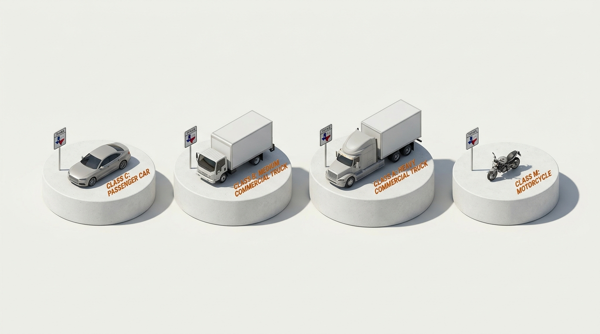

Laws for Sharing the Road
The public highway is a shared kinetic corridor. Texas statutory law strictly regulates driver duties around differing vehicle classes—mandating expanded spatial buffers, mutual non-interference, and heightened protective standards for vulnerable users.
"Every operator of a motor vehicle has an affirmative duty to exercise due care and maintain an assured clear distance, yielding precedence according to the geometric vulnerabilities and physical operational constraints of surrounding road users."

The Highway Hazard Grid
Select any category below to inspect codified Texas statutory mandates, empirical deceleration physics, and defensive motorist obligations.
Commercial Rigs & 18-Wheelers
TEXAS STATUTE: TTC § 545.062 (ASSURED CLEAR DISTANCE)verified Non-Negotiable Texas Road Rules for Large Trucks
- The "No-Zone" Doctrine: If you cannot see the truck driver's face in their side mirror, the truck driver cannot see you. Never linger alongside or tailgate directly behind a semi.
- Never Cut in Front: Commercial rigs require over 400 feet to stop from 55 MPH. Cutting closely in front eliminates the truck's mechanical braking cushion and creates an inescapable rear-end override hazard.
- Wide Right Turns (Off-Tracking): Trucks must swing wide left to clear curbs when turning right. Never attempt to pass an 18-wheeler on the right when it is signaling or preparing for a turn.
Codified Rules for Mixed-Flow Thoroughfares
Bicycle Operator Rights & Duties
In Texas, a person operating a bicycle has all the rights and duties applicable to a motor vehicle driver. They are not pedestrians and must obey standard traffic signals, signs, and lane rules.
Bicycles must ride with traffic (on the right half of the roadway), never against oncoming flow.
Mandatory Double-Fine Enhancement
Texas statute mandates that the minimum and maximum monetary fine for any moving violation is doubled automatically if committed in a construction or maintenance work zone when workers are present.
Stripes sloping downward to the right require traffic to bear right; stripes downward to the left direct traffic to bear left.
Statutory Competency Verification
Approximately how much total stopping distance does a fully loaded 18-wheeler require to come to a complete halt from a speed of 55 MPH on dry pavement?
Under Texas Transportation Code § 542.404, what statutory condition triggers the automatic doubling of traffic fines in a designated work zone?